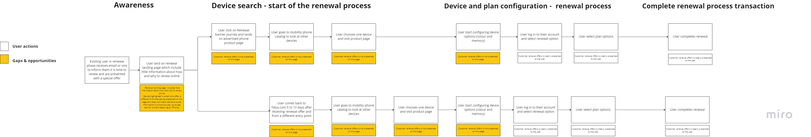
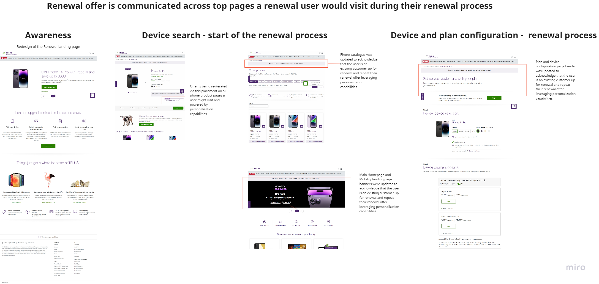

10 years of product leadership across B2B and B2C — both enterprise and startup. Currently GPM at Embroker, an AI-powered commercial insurance platform generating $100M+ in annual premium, managing four PMs across four product surfaces and reporting to the COO. Known for building product functions from scratch and running experimentation programs with measurable funnel impact. Experienced across the full product lifecycle, from 0-to-1 through scale.
Over the last 10 years, I've led growth and CRO functions, public services, conversion programs, and product visions across B2B InsurTech, the Government of Canada, B2C telecom, and e-commerce — in both enterprise and startup environments, on products spanning 0-to-1 and 1-to-many. I currently lead the full product organization at Embroker, reporting to the COO — four PMs, four product surfaces, and the operating model that holds them together.
Five case studies. Tap any one to read the full story inline.
Stood up Embroker's first dedicated growth and CRO function — the team, the experimentation program, and the operating cadence, all from scratch.
Embroker is a B2B InsurTech serving small and mid-market businesses. I joined as Senior PM for Growth & Innovation — now GPM — on Year 2 our CPO gave me the mandate to build a dedicated growth and CRO function: one squad, two PM reports, two designers, and a content writer.
There was no dedicated growth practice. Optimization happened ad hoc, experiments were rare and website-only, and there was no shared infrastructure or cadence for testing.
I built the program in four layers.
A cross-functional squad around the funnel and key product surfaces, with PMs owning their own experimentation backlogs. The central function set standards and unblocked, rather than centralizing decisions.
An explicit Growth/BAU split with quarterly engineering rotation, so growth work didn't stall every time something unplanned hit — while still giving engineers exposure to both tracks.
Established the testing stack, hypothesis and write-up standards, a shared experiment repository, and a structured cadence for review and learning — built the Growth Scorecard (quarterly OKR view), the Test Card (hypothesis intake), the Learning Card (post-test synthesis), and a centralized experiment library used across product.
With low site traffic, experimentation can't just mean A/B testing. I shaped the approach around three principles: identify where we had enough traffic to validate through testing; evaluate Bayesian vs frequentist approaches based on the question; and pair quantitative and qualitative methods where pure A/B testing wasn't viable.
The standards that made testing repeatable — and that outlived the team. Open any one.
About a year in, the signals were clear: the broader organization wasn't yet positioned to support a standalone growth function as scoped and capacity dedicated to Experimentation was always questioned, it started to errod the Business trust in the Product team. I decided to adapt the model to the org maturity level, rebuild the trust, rather than defend the structure — scale back experimentation, embed the Hypothesis driven mindset into the broader product practice, keeping the people and the muscle, and communicating the why both up and down.
The PMs approach their work from a hypothesis validation perspective. The testing stack, hypothesis standards, and experiment repository remain in use across the product organization, and the operating practices still shape how the broader team operates today.
Building a growth function isn't just a team chart — it's the standards, artifacts, and operating cadence that survive beyond any single team configuration. That's where the leverage compounds.
Led product work across two simultaneous mandates: Product Lead for COVID Alert — the Government of Canada's pandemic exposure-notification service — and Consulting Team Lead for a cross-government advisory squad helping departments without internal digital capacity. One was leading a high-stakes service through a difficult transition; the other was building the operating systems that let a small squad scale across the federal government.
By the time I joined, the service had run at crisis pace for nearly two years. The team carried real fatigue, and the relationship between CDS and a key public-health stakeholder had eroded. A new feature roadmap wasn't going to fix this — the trust and operating-environment gaps were the root problem.
I leaned on three things: walking in without a side (using my distance to build a third view rather than defaulting to either narrative); empathy as a method (understanding each stakeholder's real goals, then finding where theirs and mine overlapped); and a service lens — including the metrics (naming what success looked like, because even in government, performance matters). Ruthless prioritization, paradoxically, created the breathing room the team needed. I then led the three teams through the QR-code BETA work and authored the full decommissioning strategy.
In parallel I led a small squad partnering with departments lacking internal digital teams. Two operating systems made the difference: a problem-framing framework for discovery — templatized but personalizable, so every engagement reached a comparable, defensible understanding of the problem — and a capacity-management pipeline that tracked engagements through discovery → recommendation → delivery, so we could responsibly carry more than six at once. Ad-hoc intake became predictable.
COVID Alert's stakeholder relationship was repaired; conversations became productive again. The decommissioning plan was executed as designed after my departure. The consulting squad operated more predictably across its engagements.
Empathy is a prioritization tool — understanding what each stakeholder carries lets you make better calls about what matters. And operating systems compound: senior PM work, at its best, is building the systems that let other people do their best work.
Led TELUS's first Mobility CRO team and redesigned the digital renewal journey based on how customers actually behaved, not how the business assumed they did — consolidating fifteen segment-specific landing pages into a single personalized experience, then extending that personalization across every touchpoint a renewing customer encounters. Result: a 10% increase in digital renewal share within the first year.
The business's mental model didn't match customer behavior. The assumed flow was clean: email → dedicated landing page → renew. The actual flow was a multi-day, multi-surface journey — customers opened and clicked at high rates but came back days or weeks later through the homepage, My Account, and product pages, where the offer was buried or absent. We were optimizing a one-step funnel that customers were treating as a journey.

Phase 1 — map the real funnel. I mapped the path end-to-end and paired quantitative data with qualitative input from stakeholders, marketing, and customer service. That's what surfaced the multi-day return-visit pattern.
Phase 2 — consolidate fifteen pages into one. The pages were near-identical except for the offer. I redesigned them into a single personalized experience: standardized renewal structure, personalized offer block driven by segment.
Phase 3 — extend personalization across the journey. The same offer followed the customer across the homepage, My Account, and product detail pages. The principle: the offer follows the customer, not the other way around.

A 10% increase in digital renewal share within the first year; fifteen landing pages consolidated into one; and a cross-team precedent for personalization as a capability, not a campaign tactic. The experimentation practice I built became a foundation that scaled past my time on the team.
The real funnel is rarely the funnel on the slide — the biggest leverage in CRO is closing the gap between how the business wishes it worked and how customers actually behave. And personalization is a journey strategy, not a surface tactic.
Re-architected how PM work gets done at Embroker by mapping the lifecycle gaps a lean PM team faces, then designing AI-augmented workflows to close them. I test each workflow on my own work first, with the intent to scale across the team. The result is different unit economics for PM work — strategy, design, documentation, and execution cycles that used to take days now take hours.
Four lifecycle gaps were limiting a lean org: limited design capacity, lean PM capacity, bug intake suffering under volume, and customer feedback scattered across Salesforce, Slack, chatbots, and NPS. A headcount request wasn't going to address any of them in the near term and was not an option — rethinking the workflows might.
Four workflows so far, each addressing a specific gap. They share a logic: AI compresses the drafting, structuring, and synthesizing — so human time gets returned to judgment-heavy work like strategy, prioritization, and stakeholder dynamics. (The full operating model is mapped in the diagram below.)
The most concrete: a stakeholder surfaced that customers handling urgent cyber-incident claims didn't know there was a time-sensitive process to follow. I prototyped the component live in the meeting with Figma Make, fed the transcript into Rovo to draft the epic and stories, refined the prototype against our design system, and looped designs back to refine the stories. PRD, epic, stories, and mockups — a few hours of work, ready for grooming in under a day.
It's early, and the honest framing is: I've proven the patterns on my own work, presented to PMs who are currently testing them. The cyber-incident workflow turned a multi-day cycle into a few hours, it also created a different relationship with stakeholders who are now an active participant to shaping the solution; the triage agent gives me daily oversight I used to assemble by hand; the vision workflow is keeping a strategic project alive that would otherwise have been deprioritized. The next phase is gathering feedback and tweaking the workflows, scaling these patterns into a team operating model.
Each card closes a specific PM lifecycle gap. The point isn't tool adoption — it's redesigning how PM work gets done so capacity gets returned to the work that requires human judgment: strategy, prioritization, and stakeholder dynamics.
Gap: Lean PM capacity, limited design support — contained requests take a week to document and design.
Stakeholder meeting → prototype the component live with Figma Make
Feed meeting transcript to Rovo → draft epic and stories
Refine prototype in Figma Make using our design system → variants per touchpoint
Import to Figma, tweak → feed designs back to Rovo to refine stories
Assess fit for engineering's auto-build agent for expedited execution
Gap: Lean team struggles to triage bugs, prioritize, and close the loop with stakeholders.
Daily Rovo agent surfaces: new bugs, tickets with new comments, aged high/medium bugs in flight
(In progress) Auto-assignment agent: routes bugs to the right PM
(In progress) Duplicate detection via Rovo + priority pre-scoring (PM reviews)
(Planned) Hand-off to engineering's spike/auto-build agent for straightforward fixes
Gap: Customer signal lives across Salesforce, Slack, chatbots, and NPS — rarely synthesized into something usable.
Partner with data science to ingest all VoC channels into a unified dashboard
Model surfaces themes across sources → quantifies frequency and severity
Cross-reference with Hotjar behavioral metadata + Heap funnel data
Themes feed prioritization, ideation, and funnel gap analysis
Gap: Strategic and vision work gets deprioritized when PM capacity is tight.
Use AI as a sparring partner: refine business case, stress-test the idea, surface weaknesses
Benchmark via custom competitive analysis skill (Claude, biweekly report)
Generate design variations with Claude Design → select direction
Refine into prototype with Claude Code → share with engineering and stakeholders
A strategy exercise built in under a week for a Head of Product interview — included here as a window into how I structure ambiguous, zero-data problems. A 3-year product vision and 18-month roadmap for Protego, a UAE digital insurance brand backed by RAKBank — making the case for a deliberate shift from price-aggregator to trust-led "insurance companion." Built in under a week as a Head of Product interview case study. Resulted in an offer.
Protego operates in a market dominated by aggregators like Policybazaar and YallaCompare. The brief: define a 3-year vision and a 12–18 month roadmap. The constraint: no internal data, less than a week.
The aggregator model has structural limits — price competition, thin margins, low loyalty. The real strategic question wasn't how to be a better aggregator; it was whether the aggregator alone was enough, or whether Protego's bank backing made something more ambitious possible.
I framed the choice as: Path A — stay aggregator-only, compete on price, accept thin margins; or Path B — build a trusted digital insurance companion on top of the aggregator, owning the relationship across compare, buy, manage, and claim.
I made the case for Path B on three advantages aggregator-only competitors can't replicate: RAKBank's distribution and trust, an ICP that values confidence over cheapest price, and the structural unwinnability of competing on scale alone. From there: a 3-year horizon (Foundations → Lifecycle Value → Ecosystem Scale) and an 18-month roadmap with a Month-12 Product Market Fit checkpoint.
Offer extended for the Head of Product role. The hire was blocked by external geopolitical events affecting Dubai-based hiring — not by fit or performance.
If I were stepping into this role, two priorities early on:
- Customer interviews to validate the ICP. I built the strategy on secondary research and reasoning. Real conversations with customers would either sharpen or reshape the lens.
- Model the unit economics. The case for shifting from acquisition-led to retention-led growth is sharper with an LTV/CAC sketch under a few scenarios — and that’s the language that lands with the board.
Before anything ships, I push the team to align on three things: what problem we're actually solving, what success looks like through both a user lens and a business lens, and how we'll know the solution moved the outcome we cared about. At the GPM level, this matters more than feature velocity — because the roadmap directly shapes P&L. Prioritization and sequencing decisions feed revenue, retention, and cost. Treating the roadmap as a delivery plan rather than a financial decision is one of the most common gaps I see in product work.
Most PM work happens inside organizational reality — capacity, culture, politics, priorities. I treat that reality as an input to strategy, not friction to push past mindlessly. But adapting isn't the same as accepting. When the constraint is in the way of the right outcome, I advocate for changing it — clearly, with evidence, and with a path forward.
A feature ships once. A framework, an operating model, an experimentation program — those compound. The most leveraged PM work I've done has been building the structures that let other people do their best work, and I think about every role through that lens.
I use AI to compress drafting, structuring, and synthesis — and to keep PM capacity returned to the work that requires human judgment: strategy, prioritization, and stakeholder reading. If AI starts making the calls, you've over-rotated.
What managers, peers, and reports say.
Recommendations from LinkedIn
{{ r.quote }}